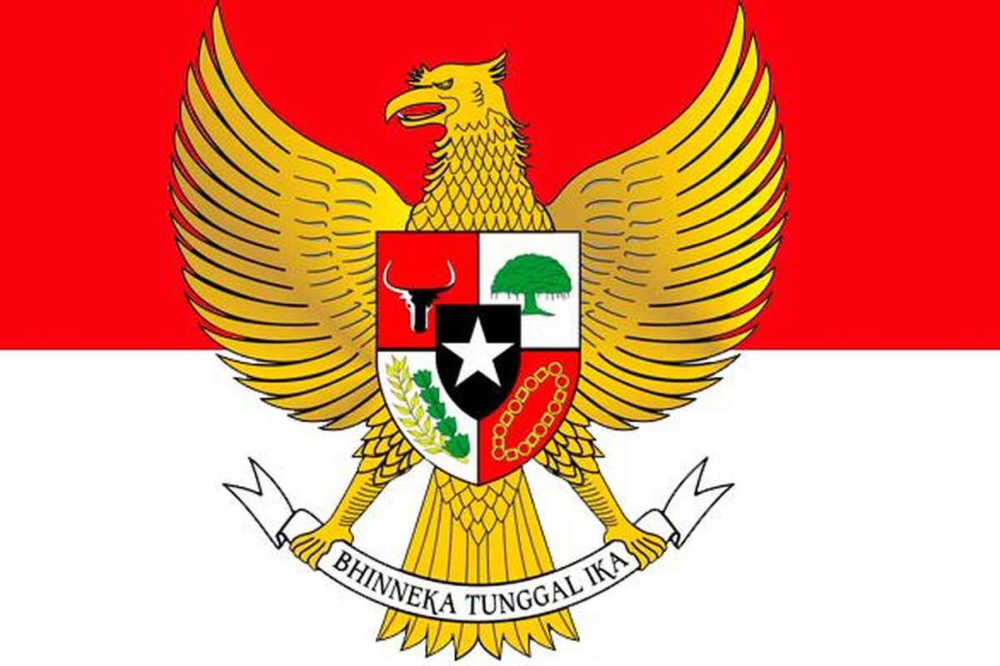
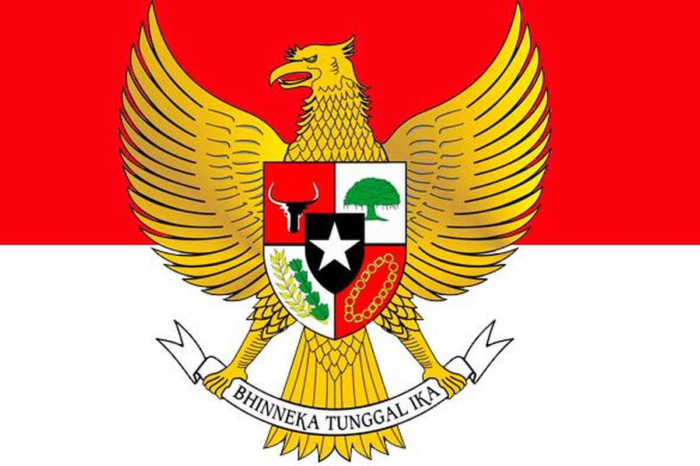

Indonesia dengan Uganda dan Afrika Timur melakukan kerja sama yang dinamakan PTA (Prefential Trade Agreement). Kerja sama ini termasuk ke dalam kerja sama bentuk multilateral, karena dilakukan antara beberapa negara di Afrika Timur dan Indonesia berbeda benua dengan Afrika, maka dinamakan bentuk kerja sama multilateral. Indonesia mengajak Afrika Timur untuk bekerja sama dalam bidang perdagangan dalam sektor ekonomi. Indonesia ingin meluaskan pasar perdagangannya agar ekonomi Indonesia dapat mengembang terus.
Kerja sama ini memiliki dampak yang lumayan positif bagi masyarakat dan Indonesia sendiri adapun dampak negatif.
Nilai pancasila yang dapat diambil dari kerja sama ini adalah persatuan. Persatuan adalah keadaan dimana beberapa pihak saling menghormati dan menghargai, dimana pihak pihak tersebut dapat bekerja sama agar mencapai tujuan bersama. Dengan Indonesia bekerja sama dengan Uganda dan Afrika Timur, Indonesia mendapatkan koneksi yang lebih luas dan terjadinya persatuan antara Indonesia dan Afrika Timur.
Tanpa kemiskinan Indonesia bekerja sama dengan Afrika Timur termasuk Uganda, Indonesia membantu salah satu negara di Afrika Timur yang termasuk negara miskin yaitu negara Burundi, Indonesia membantu negara itu dalam ekonomi dan mencoba untuk mengurangi kemiskinan.
Ekosistem darat sangatlah penting dan relevan bagi Indonesia, Indonesia terkenal sebagai negara yang paling banyak sumber daya alam dan rempah rempah. Maka dari itu, ekosistem daratan Indonesia harus dijaga dengan baik dan benar karena dengan sumber daya alam dan rempah rempah yang ada di Indonesia, ekonomi Indonesia bisa terus berkembang dan produk ekspor akan dapat diteruskan. Kerja sama Indonesia dengan Afrika Timur merupakan salah satu contoh dari SDGs ini karena kerja sama perdagangannya membutuhkan sumber daya alam dan rempah rempah yang ada di Indoensia.
Selain itu, adanya juga SDGs, Tanpa kemiskinan: Indonesia bekerja sama dengan Afrika Timur termasuk Uganda, Indonesia membantu salah satu negara di Afrika Timur yang termasuk negara miskin yaitu negara Burundi, Indonesia membantu negara itu dalam ekonomi dan mencoba untuk mengurangi kemiskinan.
Pelajaran yang saya pelajari dari tugas ini tentang peran penting Indonesia di kancah internasional untuk mendukung SDGs. Yang saya dapati dari tugas ini adalah Indonesia memiliki peran yang cukup besar di kancah internasional, Indonesia membantu negara yang mengalami isu isu, lalu Indonesia juga bekerja sama dengan negara internasional agar kebutuhan rakyat dan negara terpenuhi. Dari situ, dapat dibilang bahwa Indonesia mendukung SDGs.
Kerja sama Indonesia dengan Afrika Timur dapat menjadi implemntasi nilai nilai Pancasila, persatuan dan kemanusiaan merupaka dua nilai Pancasila yang dapat didapatkan dari kerja sama ini. Sebab Indonesia membantu negara di Afrika Timur agar mengurangi kemiskinan, lalu Indonesia juga ingin bekerja sama yang dapat dibilang persatuan. Dalam pembangunan dunia selanjutnya, Indonesia dapat berkontribu besar pada depannya jika Indonesia meneruskan kerja sama antar negara negara sebab sumber daya alam yang dimiliki Indonesia..
s
ss
s
ss